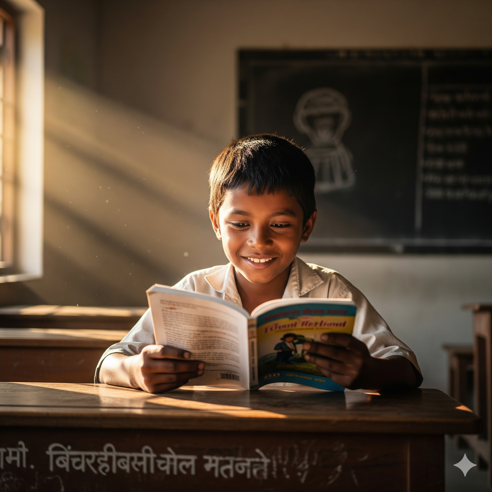
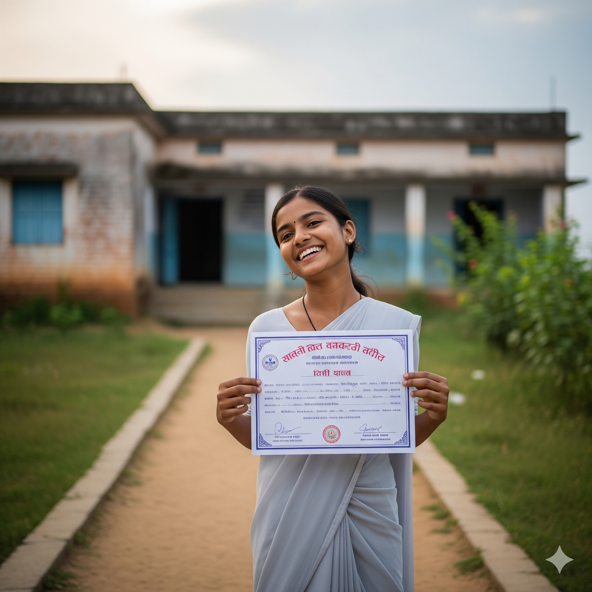
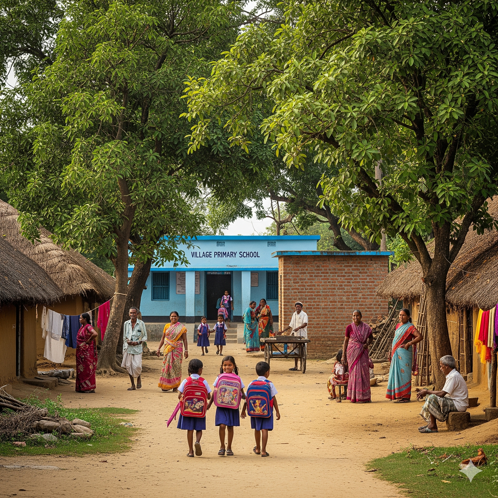
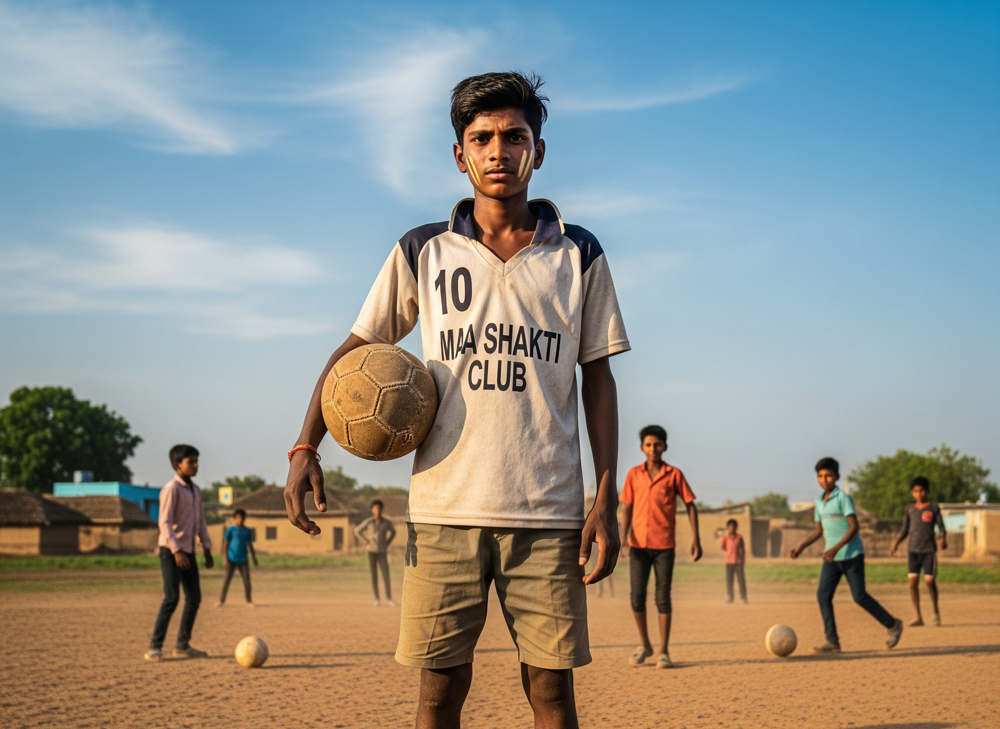
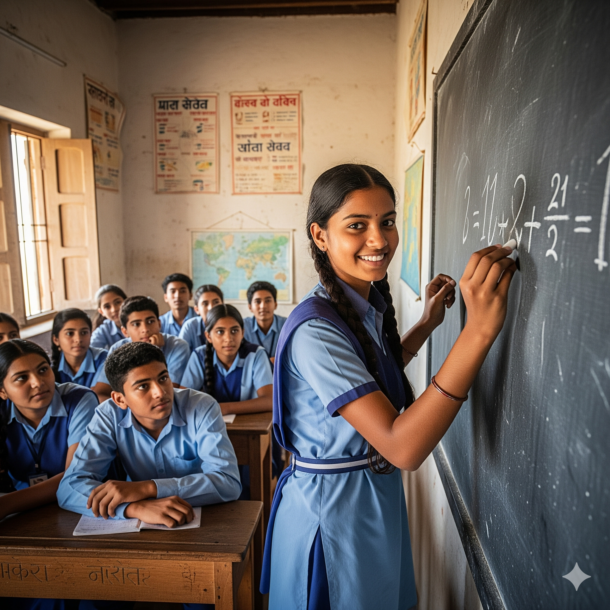
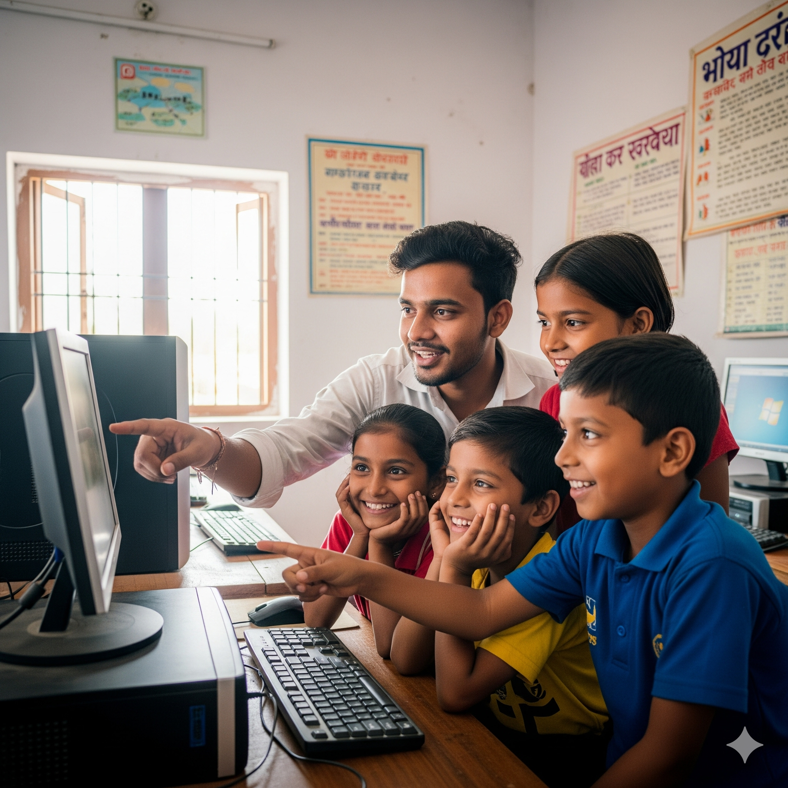

From Labor to Learning
Rahul was working in a factory at age 10. Today, he's top of his class and dreams of becoming a doctor. "Lit Kiran gave me books when I only had tools," he says.
Real stories of transformation and hope from children whose lives have been changed through education

Rahul was working in a factory at age 10. Today, he's top of his class and dreams of becoming a doctor. "Lit Kiran gave me books when I only had tools," he says.

Priya will be the first person in her family to finish high school. "My parents never went to school, but now they see the value of education," she proudly shares.

The village of Sundarpur had no school. Today, 92 children attend the learning center built by Lit Kiran. Community involvement has made this project sustainable.

Amit used to work in fields with his father. Through Lit Kiran's sports scholarship program, he now represents his district in football while continuing his studies.

Meera's family didn't believe girls needed education. Lit Kiran counselors changed their perspective, and now Meera excels in mathematics and science.

Sanjay had never touched a computer before joining Lit Kiran's digital literacy program. He now teaches basic computer skills to other children in his community.
Hear from the people who support our mission and witness our impact firsthand
Each story represents real change in communities across India
1,200+
Children provided with quality education annually
35+
Communities transformed through our programs
280+
Students who completed secondary education
500+
Documented transformations through our programs
Your support can create more stories of transformation. Whether through donations, volunteering, or spreading awareness, every action counts.